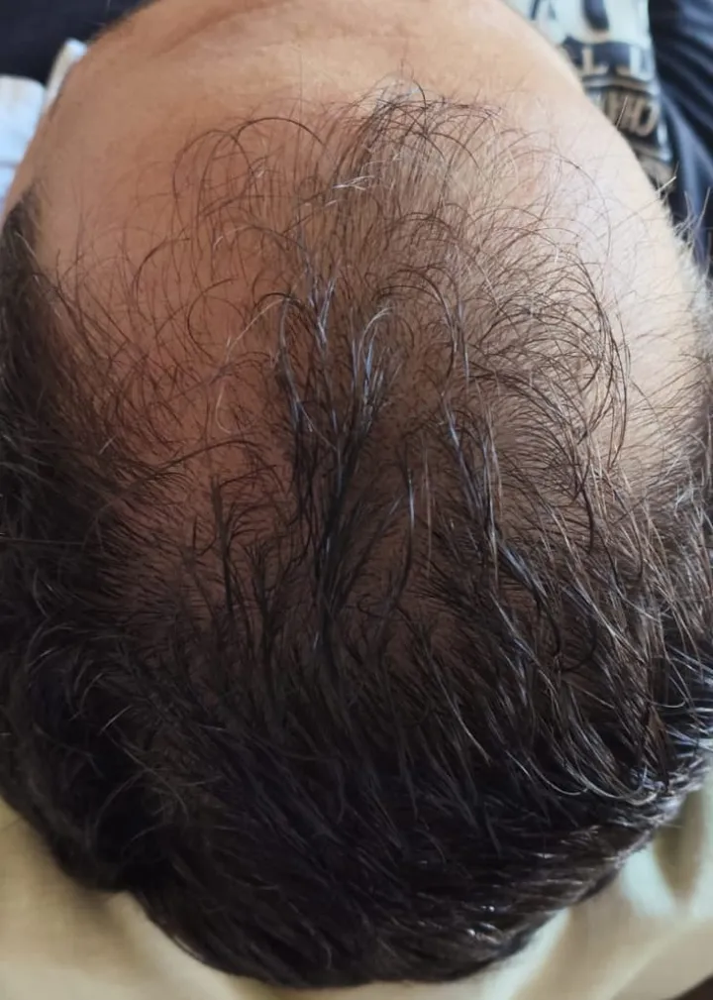
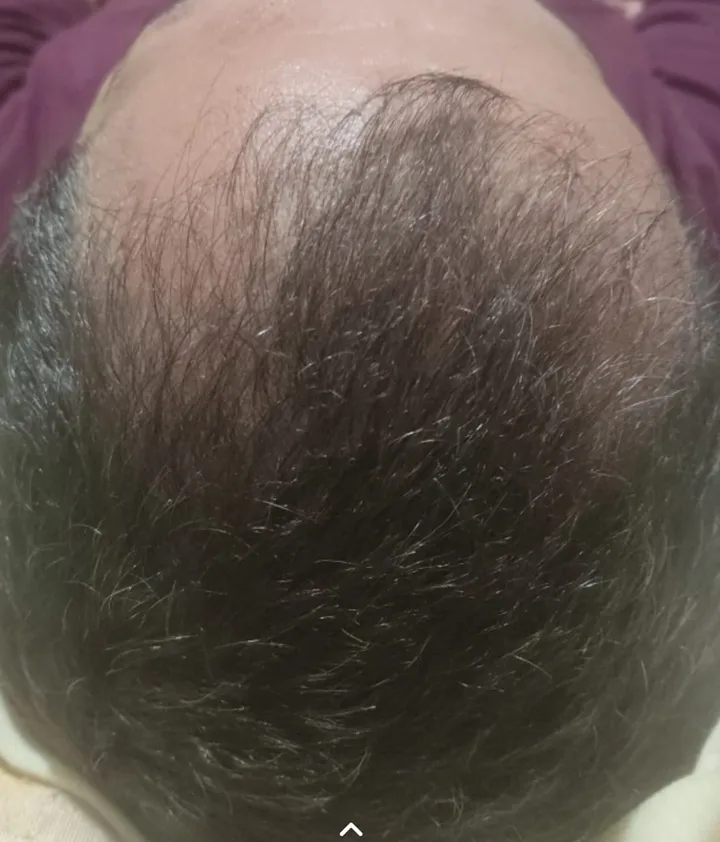
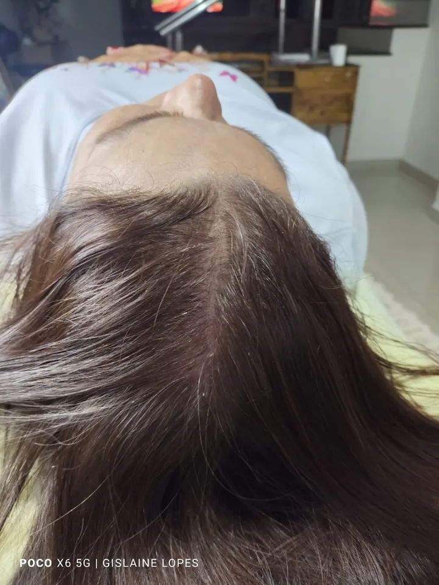
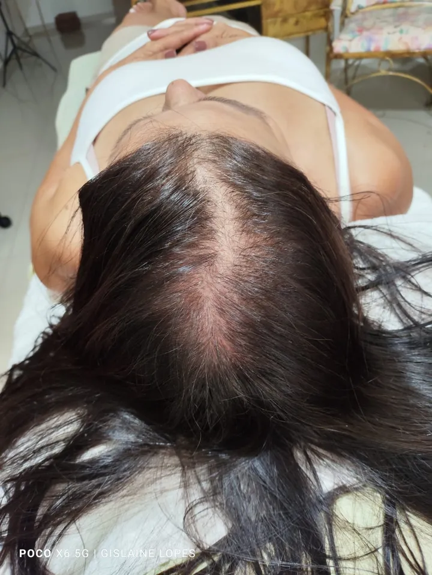
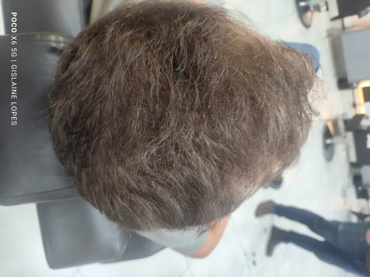
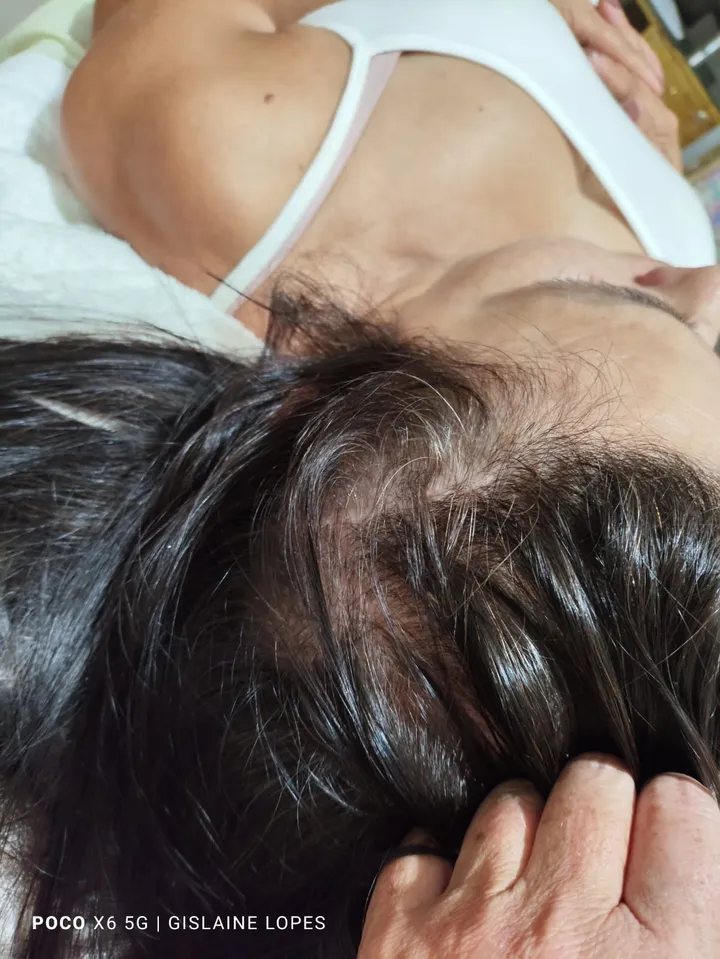
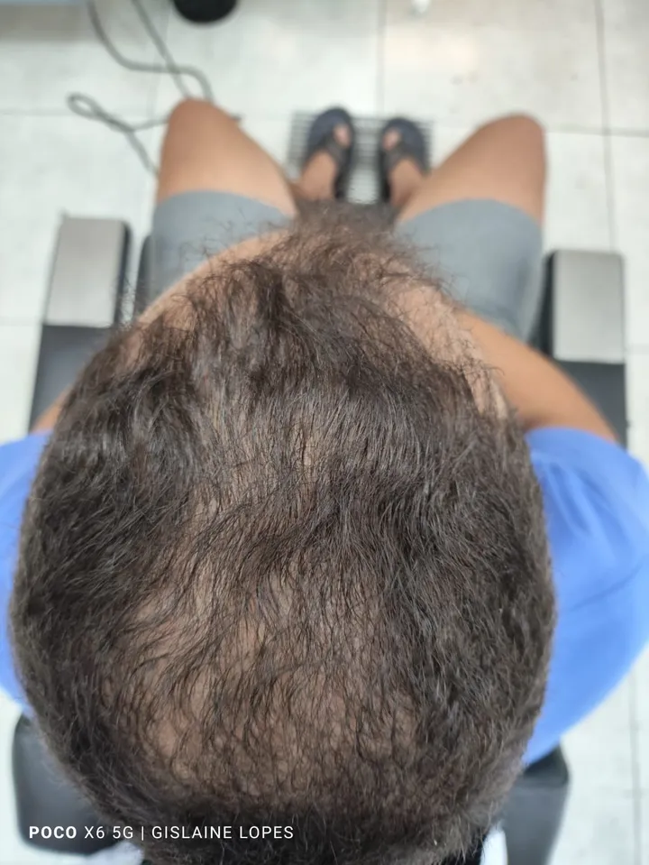

Casos reais
Registros de verdade
Fotos reais dos meus pacientes — mesma luz, mesmo ângulo, sem filtro.








Cada organismo responde no seu tempo. Estas são fotos de casos que eu acompanhei — o seu resultado depende da causa, do estágio e da constância do tratamento. Resultados variam de pessoa para pessoa.
Quero avaliar o meu caso